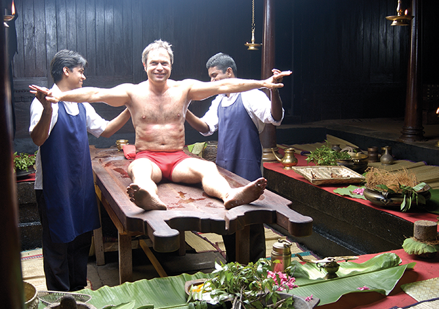
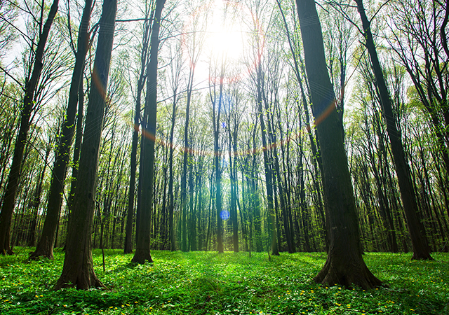
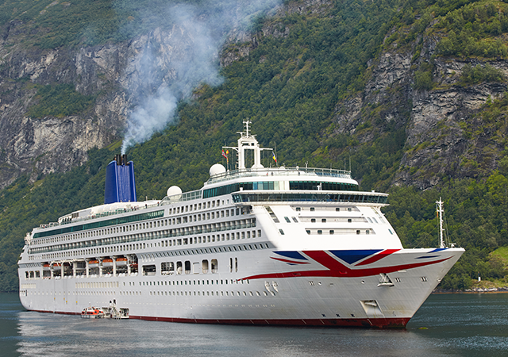

1. ADVENTURE TOURISM PACKAGE
Adventure tourism, in general, is defined as the type of tourism that encourages an individual to come out of his/her comfort zone by engaging in thrilling physical, natural or cultural activities. In the recent years, Adventure tourism in India has shown a phenomenal growth. Exploring various exotic places and trying out adventurous activities like trekking, rock climbing, kayaking, paragliding and much more are part of adventure tourism. The most exotic and adventurous destinations identified by The Ministry of Tourism in India include Ladakh, Himachal Pradesh, Assam, Arunachal Pradesh, Kerala, and Jammu and Kashmir.
2. WILDLIFE TOURISM PACKAGE

India has a rich and diverse wildlife. From the mammoth mountain ranges in the north to the tip of Kanyakumari in the south, India is the home of a large number of wildlife parks and sanctuaries. Some of the famous wildlife tourism destinations in India are Ranthambore National Park, Periyar National Park, Sariska Wildlife Sanctuary, Corbett National Park etc. If you are a wildlife explorer or photographer and wish to learn and take pictures of the untamed wildlife, then pack your bags and fly over to India. You can choose the right wildlife tourism package and begin your wildlife journey.
3. MEDICAL TOURISM PACKAGE
The medical tourism in India, for the past few years, has gained the attention of the people around the world. The ancient medical science — Ayurveda and other alternative medical practices which are recognised as highly effective for several chronic diseases, are now attracting people from every nook and corner of the globe due to the cost effectiveness and success rate. The favourite destination for medical tourism in India is Kerala which offers Ayurveda as well as Allopathy packages.
4. ECO TOURISM PACKAGE
Eco tourism has now become one of the most fascinating travel forms that has emerged these days. Eco tourism allows the tourist to experience the wonders and beauty of the underdeveloped, natural and culturally sensitive destinations in India. Although, ecotourism is more of a travel philosophy and as India has a rich ecology, it attracts a lots of tourists. Being a non destination-oriented project, some of the eco tourism destinations in India include Gavi in Kerala, Galgibaga Beach, Goa, Coorg, Nagarhole National Park in Karnataka.
5. CRUISE TOURISM PACKAGE
So do you wish to escape from the bustling city boulevards to relaxed waterways? Cruise tourism is one of the fastest and dynamically growing sector of the tourism industry in India. Cruise tourism permits tourists to explore beautiful riverside villages, undisturbed sacred islands and sights that will captivate and intrigue their senses. The major hub for cruise tourism in India is Kerala. There are also other destination like Mumbai, Goa, Chennai which offers cruise tourism.